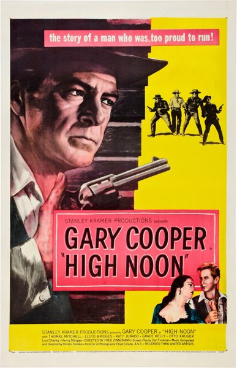

High Noon
Starring: Gary Cooper, Grace Kelly, Katy Jurado
Director: Fred Zinnemann
Writer: Carl Foreman
Producer: Stanley Kramer, Carl Foreman
Studio: United Artists
High Noon is a 1952 American Western film directed by Fred Zinnemann, produced by Stanley Kramer, and starring Gary Cooper, Grace Kelly, Katy Jurado, Thomas Mitchell, Lloyd Bridges, and Otto Kruger. The screenplay by Carl Foreman is based on John W. Cunningham's short story "The Tin Star", first published in Collier's magazine in 1947.
Trivia
- Won the Academy Award for Best Actor.
- Won the Academy Award for Best Film Editing.
- Won the Academy Award for Best Original Dramatic or Comedy Score.
- Selected for the National Board of Review: Top Ten Films.
- Also nominated for: Academy Award for Best Director; Academy Award for Best Writing, Adapted Screenplay; Academy Award for Best Picture.
- Foreman purchased the film rights to Cunningham's story and wrote the screenplay.
- By the time the documentary aired, most of the principals were dead, including Kramer, Foreman, Zinnemann, and Cooper.
- Fleischer said that his RKO contract prevented him from directing High Noon.
Filming Locations
- California
- High Noon was filmed in the late summer/early fall of 1951 in several locations in California.
- The opening scenes, under the credits, were shot at Iverson Movie Ranch near Los Angeles.
- A few town scenes were shot in Columbia State Historic Park, a preserved Gold Rush mining town near Sonora, but most of the street scenes were filmed on the Columbia Movie Ranch in Burbank.
Previous Showings
9 Runs • 7 Festivals
11,021 tickets sold
Original Billings: 1 run (April 2, 1953)
Original Run: April 2, 1953 (Thursday - Friday)
All runs on record (9):
- April 2, 1953 (Thursday - Friday)Gary Cooper, Grace Kelly
- June 24 - 29, 1995 · 1,600 ticketsw/ Red River
- August 9 - 13, 2003 · 1,810 ticketsSummer 2003w/ The Quiet Man
- August 19 - 21, 2006 · 1,712 ticketsSummer 2006w/ Love in the Afternoon
- May 29 - June 1, 2010 · 1,506 ticketsSpring 2010w/ Stagecoach
- September 3 - 6, 2016 · 1,377 ticketsSummer 2016w/ Destry Rides Again
- August 10 - 12, 2018 · 1,351 ticketsSummer 2018w/ Morocco
- August 11 - 12, 2022 · 666 ticketsSummer 2022w/ Morocco
- November 15 - 16, 2025 · 999 ticketsClassic Westernsw/ Man of the West